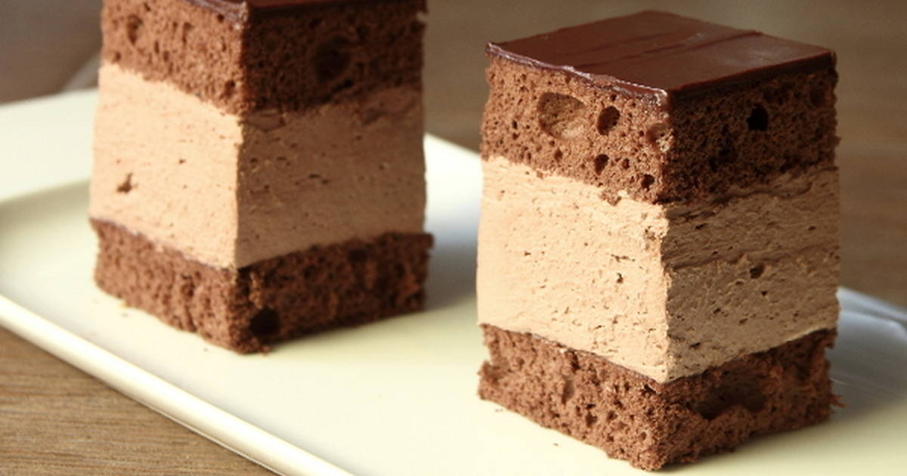
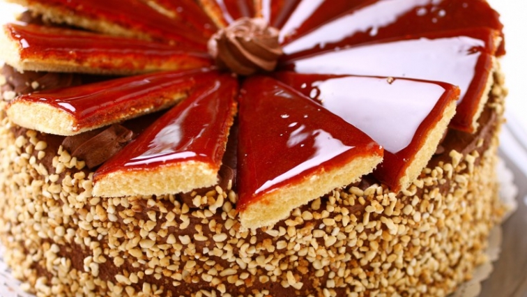
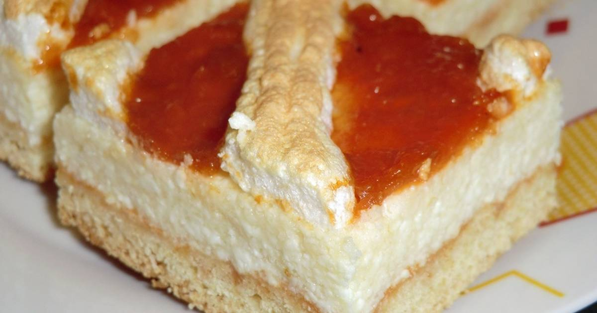
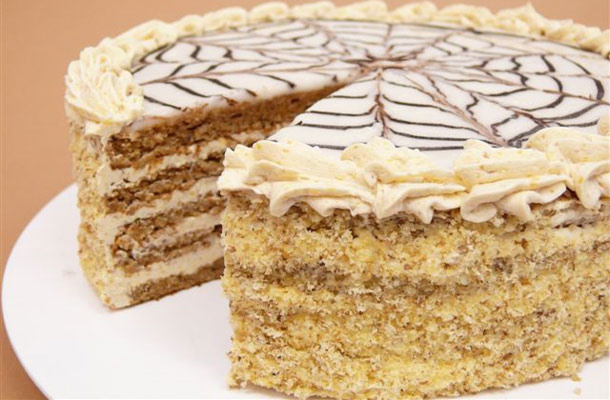

Rigó Jancsi
A rigójancsi egy hagyományos magyar, általában kocka alakú, csokoládéspiskótatészta-és csokoládékrém cukrászsütemény.
Dobos torta
Az édesség célja az volt, hogy olyan tortát készüljön el, amely elmaradott hűtési technikái mellett is hosszú ideig fogyasztható és élvezhető marad.
Somlói galuska

Piskótából készül csokoládéöntettel és tejszínhab díszítéssel.Az 1950-es évek végén a Gundel étterem főpincére készítette el.
Rákóczi-túrós
A túrós sütemény készítőjéről, Rákóczi János szakácsmesterről kapta a nevét, aki korának egyik legképzettebb mestere volt. 1958-as kiállításra készült.
Eszterházy-torta
A hagyományos torta 5 darab diós felvert rétegből és krémrétegből áll, a tetején fondan bevonattal. Nevét az Eszterházy hercegről kapta, aki nagyon szerette a tortát.